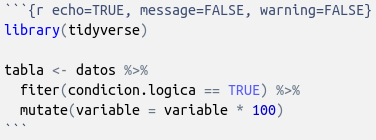

5.1 Explicación
5.1.1 R Markdown: Introducción
Los archivos R Markdown nos permiten combinar código, resultados y texto. El objetivo de esta clase es aprender a trabajar bajo dicho entorno para facilitar 3 aplicaciones:
- Documentar el trabajo que realizamos, incluyendo comentarios sobre los procedimientos.
- Compartir código y resultados con gente que también trabaja en R.
- Compartir resultados con gente que no trabaja en R, y simplemente necesita enfocarse en las conclusiones.
Las presentes notas de clase están basadas en el libro R4DS y las cheatsheets. También se recomienda el libro R Markdown: The Definitive Guide.
5.1.2 Requisitos
Necesitamos instalar y cargar el paquete rmarkdown, pero por lo general no hace falta hacerlo explíticamente porque RStudio realiza esto automáticamente cuando es necesario.
5.1.3 Markdown básico
Se trata de un archivo de extensión .Rmd. Contiene en su estructura tres tipos importantes de contenido:
- Un encabezado YAML (“Yet another markup lenguage”) rodeado de - - -
---
title: "El título de nuestro informe"
date: Septiembre 2019
output: html_document
---- Bloques de código de R rodeado de ```.

- Texto con formato (que veremos en unos minutos)
Cuando abrimos un archivo .Rmd, obtenemos una interfaz de notebook donde el código y el output se encuentran intercalados (en lugar de aparecer el output sólo en la consola, panel de Plots y/o modificaciones en el entorno de trabajo).
Los bloques de código se pueden ejecutar haciendo click en el ícono ejecutar (el botón de Play en la parte superior/derecha del bloque), o presionando Cmd/Ctrl + Shift + Enter. RStudio ejecuta el código y muestra los resultados incustrados en el código.
Para producir un reporte completo que contenga todo el texto, código y resultados, podemos clickear en Knit o presionar Cmd/Ctrl + Shift + K. Esto mostrará el reporte en el panel Viewer y creará un archivo HTML independiente que podremos compartir con otros.
5.1.4 Formateo de texto
La prosa en los archivos .Rmd está escrita en Markdown, una colección simple de convenciones para dar formato a archivos de texto plano. Markdown está diseñado para ser fácil de leer y fácil de escribir, siendo también muy fácil de aprender. Del Cheatsheet:

5.1.5 Bloques de código
Como ya mencionamos, para ejecutar código dentro de un documento R Markdown, necesitamos insertar un bloque (Chunk). Hay tres maneras para hacerlo:
- El atajo de teclado
Cmd/Ctrl + Alt + I - El icono “Insertar” en la barra de edición (
Insert > R) - Tipear manualmente los delimitadores de bloque
```{r}y```.
Obviamente, recomendamos usar el atajo de teclado porque, a largo plazo, ahorra mucho tiempo.
El código se puede seguir corriendo con Cmd/Ctrl + Enter línea a línea. Sin embargo, los bloques de código tienen otro atajo de teclado: Cmd/Ctrl + Shift + Enter, que ejecuta todo el código en el bloque.
Un bloque debería ser relativamente autónomo, y enfocado alrededor de una sola tarea.
Las siguientes secciones decriben el encabezado de bloque que consiste en ```{r, seguido por un nombre opcional para el bloque, seguido entonces por opciones separadas por comas, y concluyendo con }. Inmediatamente después sigue tu código de R el bloque y el fin del bloque se indica con un ``` final.
Hay un nombre de bloque que tiene comportamiento especial: setup. Cuando nos encontramos en modo notebook, el bloque llamado setup se ejecutará automáticamente una vez, antes de ejecutar cualquier otro código.
5.1.6 Opciones en los bloques de código
La salida de los bloques puede personalizarse con options, argumentos suministrados en el encabezado del bloque. Knitr provee casi 60 opciones para que puedas usar para personalizar tus bloques de código, la lista completa puede verse en http://yihui.name/knitr/options/.
Las que más utilizamos nosotros son:
eval = FALSEevita que código sea evaluado. (Y obviamente si el código no es ejecutado no se generaran resultados). Esto es útil para mostrar códigos de ejemplo, o para deshabilitar un gran bloque de código sin comentar cada línea.include = FALSEejecuta el código, pero no muestra el código o los resultados en el documento final. Usa esto para el código de configuracion que no quieres que abarrote tu reporte.echo = FALSEevita que se vea el código, pero no los resultados en el archivo final. Utiliza esto cuando quieres escribir reportes enfocados a personas que no quieren ver el código subyacente de R.message = FALSEowarning = FALSEevita que aparezcan mensajes o advertencias en el archivo final.results = 'hide'oculta el output impreso;fig.show = 'hide'oculta gráficos.error = TRUEcausa que el render continúe incluso si el código devuelve un error. Esto es algo que raramente querés incluir en la version final de tu reporte.

Contamos con algunas de estas opciones en el menú de Configuración en la parte superior-derecha del Chunk de código.
5.1.7 Tablas
Por defecto, las tablas se imprimen tal como salen como en la consola. Si queremos que los datos tengan un formato adicional podemos usar la función knitr::kable(). Aún más, recomendamos mirar los paquetes kableExtra y formattable.
Para una mayor personalización, se pueden considerar también los paquetes xtable, stargazer, pander, tables, y ascii. Cada uno provee un set de herramientas para generar tablas con formato a partir código de R.
5.1.8 Opciones globales
Algunas de las opciones default que tienen los bloques de código pueden no ajustarse a tus necesidades. Podemos setear cambios incluyendo knitr::opts_chunk$set() en un bloque de código. Por ejemplo:
knitr::opts_chunk$set(echo = FALSE)
Ocultará el código por defecto, así que sólo mostrará los bloques que deliberadamente elegimos mostrar con echo = TRUE.
5.1.9 Código en la línea
Otra forma de incluir código R en un documento R Markdown es insertarlo directamente en el texto, encerrando entre `` "r codigo". Esto puede ser muy útil si queremos mencionar propiedades o atributos de los datos o resultados en el texto.
Cuando insertamos números en el texto, format() nos va a ser de mucha ayuda. Esto permite establecer el número de digitos para que no imprimas con un grado rídiculo de precisión, y una big.mark para hacer que los números sean mas fáciles de leer. Por ejemplo, en una función de ayuda:
formato <- function(x){
format(x, digits = 2, big.mark = ".", decimal.mark = ",")
}
formato(3452345)## [1] "3.452.345"## [1] "0,12"5.1.10 Formatos
Hasta ahora vimos R Markdown para producir documentos HTML:
---
title: "Clase"
output: html_document
---Para sobrescribir los parámetros predeterminados se necesita usar un campo de output extendido. Por ejemplo, si queremos generar un html_document con una tabla de contenido flotante, usamos:
---
title: "Clase"
output:
html_document:
toc: true
toc_float: true
---Para los html_document otra opción es hacer que los fragmentos de código estén escondidos por defecto, pero visibles con un click:
---
title: "Clase"
output:
html_document:
code_folding: hide
---5.1.11 Otros formatos
Hay todo un número de variaciones básicas para generar diferentes tipos de documentos:
pdf_documentcrea un PDF con LaTeX (un sistema de código abierto de composición de textos), que necesitarás instalar. RStudio te notificará si no lo tienes.word_documentpara documentos de Microsoft Word (.docx).odt_documentpara documentos de texto OpenDocument (.odt).
y más!
5.1.12 Notebooks
Un notebook, html_notebook (“cuaderno” en español), es una variación de un html_document. Las salidas de los dos documentos son muy similares, pero tienen propósitos distintos. Un html_document está enfocado en la comunicación con los encargados de la toma de decisiones, mientras que un notebook está enfocado en colaborar con otros científicos de datos. Estos propósitos diferentes llevan a usar la salida HTML de diferentes maneras. Ambas salidas HTML contendrán la salida renderizada, pero el notebook también contendrá el código fuente completo. Esto significa que podemos usar el archivo .nb.html generado por el notebook de dos maneras:
Podemos verlo en un navegador web, y ver la salida generada. A diferencia del
html_document, esta renderización siempre incluye una copia incrustada del código fuente que lo generó.Podemos editarlo en RStudio. Cuando abramos un archivo
.nb.html, RStudio automáticamente recreará el archivo.Rmdque lo creó.
5.1.13 Publicar
Desde RStudio tenemos la posibilidad de publicar nuestros Markdown en RPubs de forma gratuita, desde el botón Publish document. Todo lo que subamos a nuestra cuenta de RPubs será público.
5.1.14 FlexDashboard
Los dashboards (“tableros de control” en español) son una forma útil de comunicar grandes cantidades de información de forma visual y rápida. Flexdashboard hace que sea particularmente fácil crear dashboards usando R Markdown y proporciona una convención de cómo los encabezados afectan el diseño:
- Cada encabezado de Nivel 1 (#) comienza una nueva página en el dashboard.
- Cada encabezado de Nivel 2 (##) comienza una nueva columna.
- Cada encabezado de Nivel 3 (###) comienza una nueva fila.
Flexdashboard también proporciona herramientas simples para crear barras laterales, tabuladores, cuadros de valores y medidores. Podemos obtener más información (en inglés) acerca de Flexdashboard en http://rmarkdown.rstudio.com/flexdashboard/.